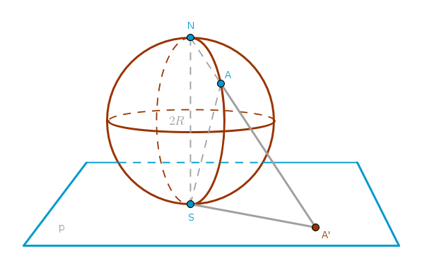
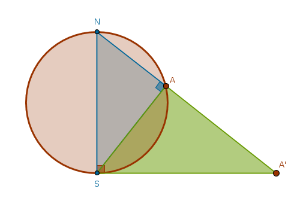
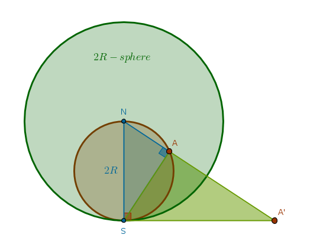

Context
The context of this tutorial is Euclidean geometry only.
Notation
We will qualify the observations in this tutorial as Properties and will refer to them in an abbreviated form in heavy print: ICP1, for example, will stand for "Inversion with respect to a Circle, Property 1". Definitions will be designated as ICD1, exercises - as ICE1 and so on. We will refer to Euclid's theorems from his book "Elements" in the similar way - B1P1, for example, will stand for Book 1 Proposition 1 and so on.
Line(\(A\), \(B\)) means "a straight line passing through the points \(A\)
and \(B\)".
LineSegment(\(A\), \(B\)) means "a line segment between the points \(A\)
and \(B\)".
Ray(\(O\), \(A\)) means "a ray originated at the point \(O\) and passing
through the point \(A\)".
Circle(\(O\), \(r\)) means "a circle with a center at a point \(O\) with
a radius r".
If the above notation is seen for the first time during a particular construction then it means take action - construct the corresponding object. If this notation is repeated then it means a reference to a previously constructed object.
Introduction
Inversion with respect to a circle was invented by L. J. Magnus in 1831 (Coxeter, "Introduction to Geometry", second edition, p. 77). To ease our way into it let us step back a bit and consider something that should be trivial to visualize - a sphere of radius \(R\) or (\(R\)-sphere) touching a plane \(p\) at a point \(S\) - the south pole of the \(R\)-sphere. A straight line through \(S\) perpendicular to the plane \(p\) will pass through the center of the sphere and will also intersect the sphere at a point \(N\), the north pole of the \(R\)-sphere, diametrically opposite to the point \(S\):
At random pick a point \(A\) anywhere on the sphere but its north pole \(N\). Draw a ray from \(N\) through \(A\). That ray will pierce the \(R\)-sphere through the point \(A\) and the plane \(p\) through the point \(A'\).
The repetition of the above process for all the points on the \(R\)-sphere will create a stereographic projection of the sphere (the space, if \(R\) is varied) onto the plane. As topologists we would like this projection to be wholesome - if it were possible to carry out the above operation for any point on the sphere then topologically the sphere and the plane would be equivalent.
However, as is stands right now there is a bit of trouble going on with our projection. Let us do two operations: cut our formation with a plane through the points \(N\), \(S\) and \(A'\) and turn that plane so that it is parallel to the plane of our monitors:
Consider \(\triangle NAS\) and \(\triangle NSA'\) of which \(\triangle NSA'\) is right by construction. The point \(A\) is on the \(R\)-sphere's great circle passing through \(N\) and \(S\). From B3P31 we know that in a circle the angle in the semicircle is right. Hence, \(\angle NAS\) is right. \(SA\) is a perpendicular to the base \(NA'\) drawn from the right angle at \(S\). From B6P8 it follows then that \(\triangle NAS\) and \(\triangle NSA'\) are similar and in similar triangles the corresponding sides about the equal angles are in the same proportion, B6P4: $$\frac {SA'}{NS} = \frac {AS}{AN}$$ $$AN = \frac {NS \times AS}{SA'} = \frac {2R \times AS}{SA'}$$
Now let us move \(A\) along the surface of the \(R\)-sphere arbitrarily close to \(N\). In that case \(AS > R\) and:
$$AN > \frac {2R^2}{SA'}$$which means that as the length of the line segment \(AN\) arbitrarily diminishes the length of the line segment \(SA'\) arbitrarily grows and, as is, \(N\) can not have its image (\(N'\)) on the plane \(`\). To complete the picture and include \(N\) in the set of points on the sphere that have a corresponding point (image) on the plane under the stereographic projection we have to introduce a special point - a point at infinity \(P_{\infty}\) which we will encounter again soon.
Let us reuse the similarity of the same triangles, \(\triangle NAS\) and \(\triangle NSA'\), but in a different way - by constructing a different proportion. Instead of using only the sides of the right triangles let us use their hypotenuses:
$$\frac {NA'}{NS} = \frac {NS}{NA}$$ $$NS = 2R$$ $$NA' \times NA = 4R^2$$We see that under the stereographic projection the product of the distances between the north pole, the point on the \(R\)-sphere and its image on the plane is the square of the \(R\)-sphere's diameter.
Let us add another sphere to our arrangement. Make the radius of the new sphere \(2R\), place its center at \(N\) and name it the \(2R\)-sphere.
From the above drawing it should be clear that even though our point \(A\) is now inside the \(2R\)-sphere all the previous ratios hold. By replacing \(2R\) with \(r\) we obtain:
$$NA' \times NA = r^2$$By manipulating our spheres in a simple way we observe the following:
- the ray \(NA\) connects the center of the \(2R\)-sphere with \(A\)
- the line \(AS\) is perpendicular to \(NA\)
- the line that is perpendicular to the ray \(NS\) intersects the ray \(NA\) at \(A'\)
Let us keep the last drawing in mind.
What we have just performed is called the inversion (of 3-space) with respect to a sphere. It carries a fair amount of similarity with the inversion (of 2-space) with respect to a circle which we will now take a closer look at.
\(\blacksquare\)